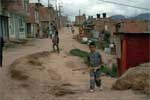

|
|
Nach der Flut
Interview mit terre des hommes-Geschäftsführer Peter Mucke
|
Am 26. Dezember 2004 löste ein starkes Seebeben im indischen
Ozean die Flutwelle aus, die die Küsten Südasiens verwüstete
und mehr als 250.000 Menschenleben forderte. Weltweit folgte auf den
Tsunami eine enorme Hilfsbereitschaft. Allein in Deutschland wurden mehr
als 500 Millionen Euro gespendet. Schon in den ersten Tagen nach der
Katastrophe organisierte das Kinderhilfswerk terre des hommes Hilfsprogramme
für die Überlebenden. Über die Perspektiven der Arbeit äußert
sich der Geschäftsführende Vorstand von terre des hommes, Peter
Mucke, im Interview.
zum Interview |
|
Gegen Kindesmissbrauch in Urlaubsländern:
tdh-Internet-Plattform www.child-hood.com
mit erweitertem Informationsangebot
|
Kinder in Urlaubsländern vor sexuellem Missbrauch schützen
- die Website www.child-hood.com liefert konkrete Informationen, wie Reisende
dabei helfen können. Unter der Überschrift »Please
Disturb - Gegen die sexuelle Ausbeutung von Kindern im Tourismus« widmet
sich die Internet-Plattform des entwicklungspolitischen Kinderhilfswerks
terre des hommes seit vier Jahren dem Kampf gegen Sextourismus. Jetzt
wurde sie mit finanzieller Unterstützung
des Bundesministeriums für wirtschaftliche Zusammenarbeit und
Entwicklung (BMZ) inhaltlich erweitert.
Die neue Rubrik "Staaten" beinhaltet beispielhafte Initiativen
von staatlichen Stellen und Organisationen, die sich weltweit
gegen die sexuelle Ausbeutung von Kindern im Tourismus einsetzen.
Dort finden sich außerdem Adressen
von nationalen Ansprechpartnern und Organisationen, die für
die Durchsetzung von Kinderrechten vor Ort arbeiten. An sie
können sich Reisende wenden, wenn sie in
ihrem Urlaubsland mit dem Missbrauch von Kindern konfrontiert werden und reagieren möchten.
Weiterhin verfügbar sind umfangreiche Informationen zur Situation
in einzelnen Ländern und konkrete Handlungsempfehlungen
für Reisende und
Mitarbeiter der Tourismusindustrie.
Die Zahl der Kinder, die weltweit sexuell missbraucht werden, steigt
weiterhin stetig. "Jahr für Jahr müssen mehrere
Millionen Mädchen
und Jungen diesen zerstörerischen Angriff auf Körper
und Seele erleiden",
erklärte Christa Dammermann, Referentin für Kinderrechte
bei terre des hommes. Deshalb wendet sich terre des hommes
seit Jahren auch mit Aufklärungsarbeit und Informationsangeboten
wie der jetzt erweiterten Website gegen diese Verbrechen.
Außerdem unterstützt
terre des hommes Hilfsprojekte für sexuell ausgebeutete Kinder in Asien, Afrika
und Lateinamerika.
Überarbeitet wurde die Website www.child-hood.com von den Agenturen
Hill & Knowlton Berlin (Beratung, Text, Koordination),
EURO RSCG Düsseldorf (Konzeption
und Gestaltung) und Gatworks (Hosting und Programmierung). |
|
terre des hommes unterstützt Stop EPA-Kampagne
|
EPAs, auf Deutsch "Wirtschaftspartnerschaftsabkommen", sind
regionale
Freihandelsabkommen, die zurzeit zwischen der EU und den 77
Staaten der AKP-Gruppe verhandelt
werden. Die internationale "Stop EPA" - Kampagne setzt sich zum
Ziel,
eine kritische Öffentlichkeit für die zu erwartenden negativen
Auswirkungen der EPAs herzustellen.
Dazu gehören u.a. ungleiche Anpassungskosten, die Zerstörung
sensibler Entwicklungssektoren durch ungeschützte und vorschnelle
Liberalisierung und die Unterminierung der bisherigen Ansätze
regionaler Integration. Außerdem soll über Lobbyarbeit an die
Adresse
nationaler Parlamente und Regierungen das von der EU-Kommission
künstlich aufgebaute Tempo der Verhandlungen entschleunigt und
Alternativen zu EPAs ins Spiel gebracht werden, die den Entwicklungsbedürfnissen
der betroffenen Länder entsprechen.
terre des hommes ist im März 2005 Mitglied des deutschen Unterstützerkreises
der Kampagne geworden.
Mehr:
http://www.stopepa.de/
Ansprechpartner bei terre des hommes:
|
|
erlassjahr.de: Setz dich ein mit deinem Namen!
|
Die Kampagne erlassjahr.de hat eine neue Aktion gestartet. Zum 4.
Juli, also kurz vor dem G7-Gipfel in Gleneagles in Schottland, soll
der Bundeskanzler mit einer ganzseitigen Anzeige in der Financial
Times Deutschland aufgefordert werden, beim G7-Gipfel einen
umfassenden Schuldenerlass in einem fairen und transparenten
Verfahren durchzusetzen.
Dafür sammelt Erlassjahr jetzt UnterstützerInnen, deren
Name auch in
der Anzeige erscheinen wird.
Mehr:
http://www.erlassjahr.de/content/mitmachen/aktionen_ftd_anzeige.php |
|
Kolumbien: Schwere Menschenrechtsverletzungen in
Cauca
terre des hommes appelliert an die Bundesregierung
|
Im kürzlich entflammten Konflikt in der Region Cauca im Südosten
Kolumbiens finden systematische Verletzungen des humanitären
Völkerrechts statt. "Sowohl das kolumbianische Militär
wie die FARC-Guerilla nehmen bei ihren Kampfhandlungen keine Rücksicht
auf die Zivilbevölkerung. Das
ist völkerrechtswidrig", so Andreas Rister, Kolumbien-Experte
beim Kinderhilfswerk terre des hommes.
Die vor etwa zwei Wochen erneut ausgebrochenen Auseinandersetzungen
sind in den letzten Tagen heftiger geworden. Wie Partnerorganisationen
von terre des hommes berichten, bombardiert die kolumbianische
Luftwaffe zivile indianische Gemeinden, während die Guerilla
zu Bomben umgebaute Gasflaschen einsetzt. Über
3.500 Menschen sind aus dem mehrheitlich indianisch bewohnten Kriegsgebiet
geflohen, vor allem Angehörige des Volkes der Paes. Schätzungen
belaufen sich auf ca. 2.500 Kinder, die derzeit von den Auseinandersetzungen
betroffen sind. "Es kommt
zu willkürlichen Festnahmen, Kinder werden bei Militärkontrollen
misshandelt oder zum Dienst an der Waffe gezwungen",
beschreibt Andreas Rister die Situation vor Ort. Eine große Gefahr besonders
für Kinder stellten auch die während der Kämpfe
gelegten Minen und die zahlreichen Blindgänger dar. "Wir
verurteilen die Angriffe gegen die
Zivilbevölkerung", so Rister, "und fordern von der kolumbianischen
Regierung, dem Militär und der FARC-Guerilla die Einhaltung
des Kriegsvölkerrechts." Weiterhin fordert terre
des hommes die Bundesregierung auf, bei der kolumbianischen Regierung energisch
auf die Umsetzung des humanitären Völkerrechts
und die Einhaltung der bei den Geberkonferenzen in London und Cartagena
eingegangenen Verpflichtungen zu drängen.
Das entwicklungspolitische Kinderhilfswerk terre des hommes unterstützt
seit mehr als 20 Jahren die Bemühungen der indigenen
Völker in Cauca
um Frieden. Hoffnungsvolle Ansätze - wie die Einrichtung
von Friedensgemeinden ohne Militärpräsenz
- werden jedoch immer wieder durch die Bürgerkriegsparteien bedroht oder
zerstört. |
|
30. April: 30 Jahre Kriegsende in Vietnam
terre des hommes: Noch immer
keine Gerechtigkeit für die Opfer des Krieges
|
30 Jahre nach Ende des Krieges in Vietnam warten viele Vietnamesen
nach wie vor auf Gerechtigkeit. Allein in
der Hochphase des Krieges zwischen
1967 und 1971 hat die US-Armee mindestens
100 Millionen Liter Chemikalien über dem Süden Vietnams
abgeworfen, davon rund 44 Millionen Liter
mit dem Entlaubungsgift
Agent Orange. Zwei Millionen Menschen wurden
vergiftet und weitere vier Millionen
schwer geschädigt. »Die
Menschen leiden noch heute unter den Spätfolgen der Dioxinvergiftung.
Rund 150.000 Kinder wurden mit unterentwickelten oder
verkrüppelten Gliedmaßen geboren, was auf die Dioxinvergiftung
ihrer Großeltern zurückzuführen ist«,
erklärte Wolf-Christian Ramm,
Pressesprecher von terre des hommes.
Vergiftete Böden und stark erhöhte Dioxinwerte in
Körpergeweben von Fischen bewirkten,
dass das Gift über die Nahrungskette in den Körper
der Menschen gelangt und deren genetisches
Erbgut angreift. Dies führe zu Hirnfunktionsstörungen und angeborenen
Missbildungen.
»Es ist ein Skandal, dass es für
die vietnamesischen Opfer des Krieges noch
immer keine Entschädigung durch die US-Chemiefirmen gibt«,
so Ramm weiter. Zwar fand im Frühjahr 2002
in Stockholm eine Konferenz zu den Spätfolgen
des Vietnamkrieges statt. Doch
hat zuletzt im März
2005 ein amerikanisches Gericht die Klagen
vietnamesischer Opfer gegen 37 US-Firmen
abgelehnt, weil angeblich kein Zusammenhang zwischen den Bombardierungen
im Krieg und den Erkrankungen der Vietnamesen nachgewiesen werden könne.
terre des hommes hat während des Vietnamkrieges Rettungsflüge
für verletzte Kinder nach
Deutschland organisiert und unterstützt dort seit 30
Jahren Projekte. Derzeit
werden 23 Programme in den verschiedensten Regionen
des Landes gefördert,
darunter
viele für die Opfer des Krieges.
|
|
|
|
 Ansprechpartner Ansprechpartner
|
|
Wolfgang Deppisch
(Projektinfos)
Tel. 07222 / 32927
Heinz Wolf
(Sponsoring, Allgemeines)
Tel. 07225 / 75543
weitere Ansprechpartner
|
|
Erlöse
1992-2012
|
|

Jahr |
Euro |
1992 |
70.000 |
1993 |
75.600 |
1994 |
83.883 |
1995 |
69.617 |
1996 |
51.412 |
1997 |
61.749 |
1998 |
60.333 |
1999 |
68.742 |
2000 |
85.492 |
2001 |
106.375 |
2002 |
78.937 |
2003 |
84.027 |
2004 |
76.662 |
2005 |
149.941 |
2006 |
84.497 |
2007 |
105.958 |
2008 |
104.053 |
2009 |
100.833 |
2010 |
107.254 |
2011 |
103.600 |
| 2012 |
158.250 |
| 2013 |
163.420 |
1977-2013 |
mehr als 2,7 Mio. € |
|
Detailansicht der Erlöszahlen |
|
|


;)